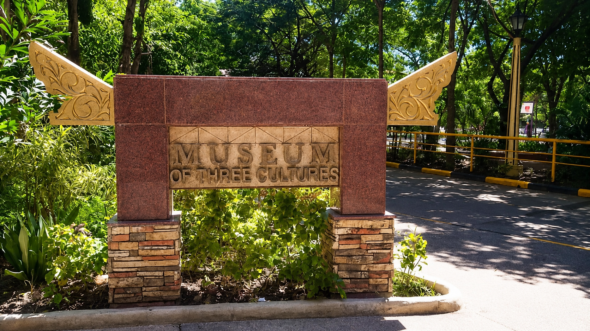
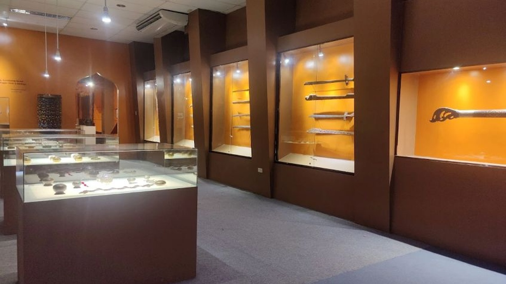

Museum of Three Cultures


Located right on the Capitol University campus in Cagayan de Oro, the Museum of Three Cultures serves as a vital cultural repository dedicated to exploring and preserving the rich heritage of Northern Mindanao. By beautifully stitching together the distinct narratives of the region's three dominant groups—the lowland Christian migrants, the indigenous peoples, and the Muslim Maranao—this unique institution offers visitors an immersive look into the artifacts, arts, and traditions that shape the area's diverse identity.